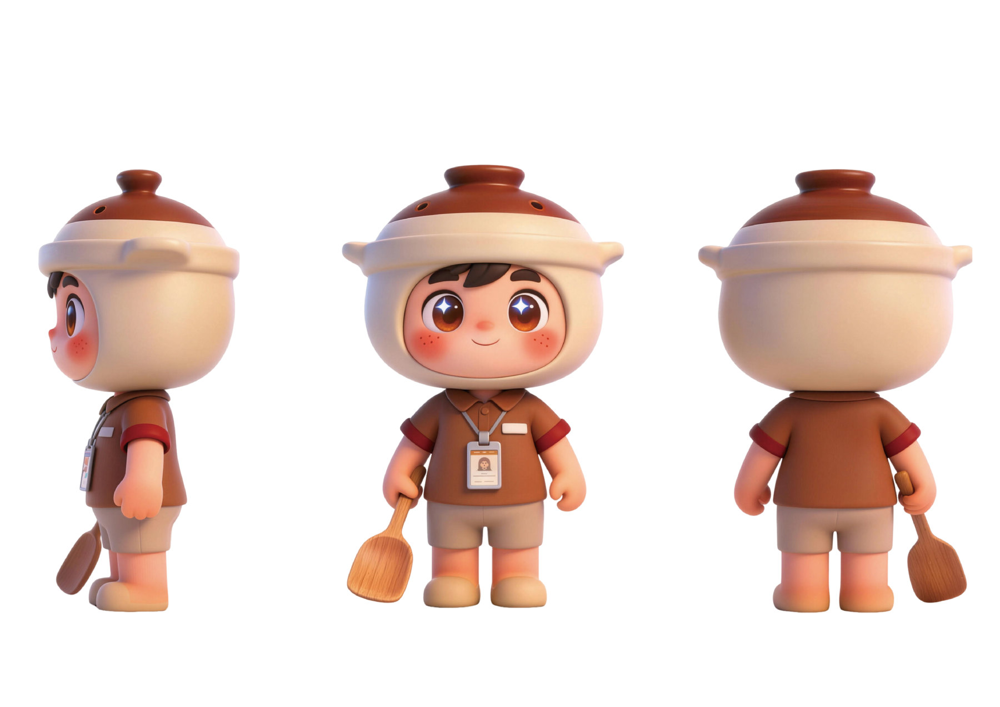
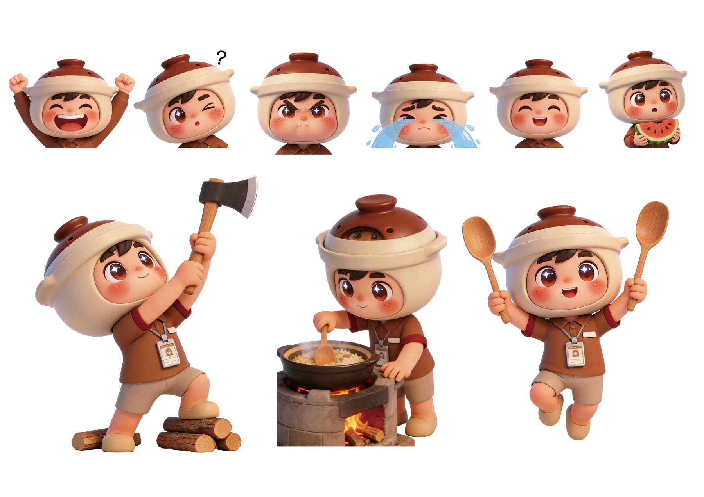
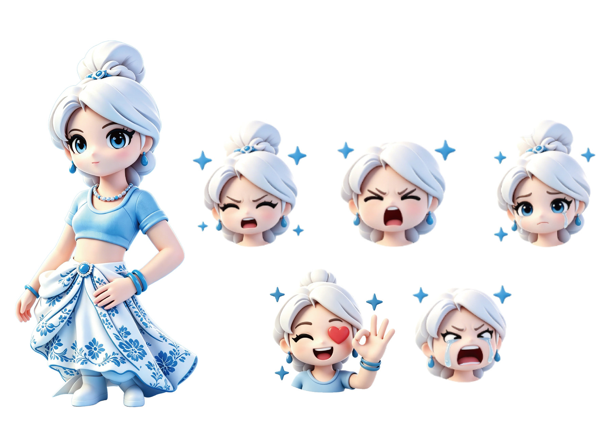

两个原创形象：小煲 X-bao 与 小xin X-xin。从煲仔饭的烟火气到青花瓷的清透，完成形象设定、三视图、表情与动作延展。
为两个原创形象建立从三视图、表情到动作延展的完整规范，兼顾可爱度、性格辨识与后续周边延展性。

以砂锅为头部造型的小厨师形象：正面、侧面、背面三视图，统一头身比、配色与服装细节。

六款表情与三组动作延展，覆盖兴奋、疑惑、生气、大哭等情绪，以及劈柴、煮饭、举勺跳跃等生活化场景。

青花瓷质感的少女形象，蓝白配色与缠枝纹裙摆呼应在地文化，配套五款表情延展。
微信 · WeChat：13528376257